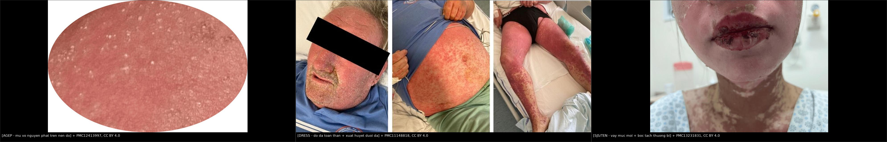
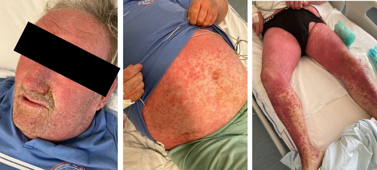
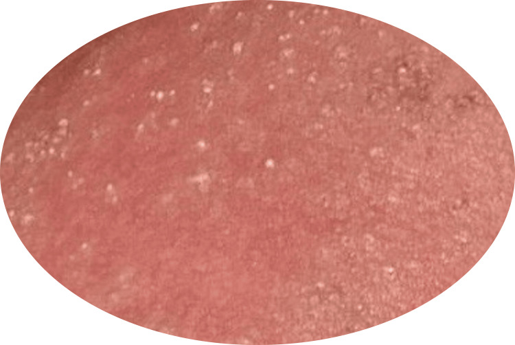
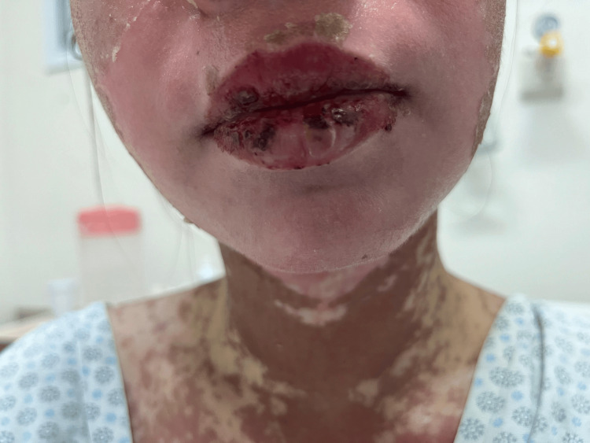
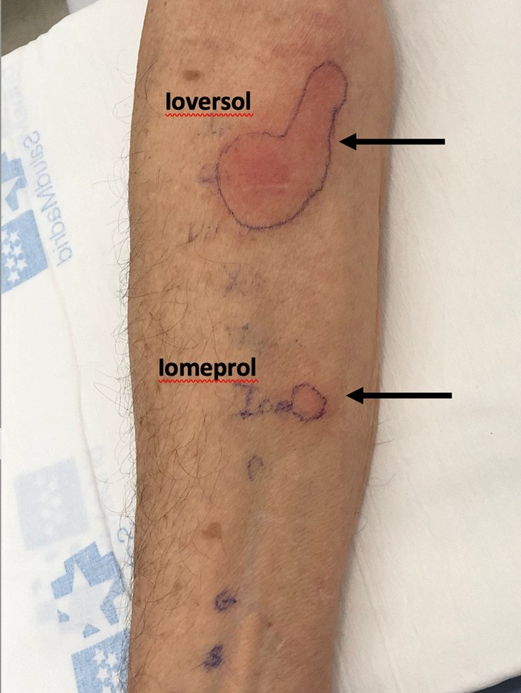

936 — Phản ứng da muộn NẶNG sau thuốc cản quang: AGEP, DRESS, SJS/TEN / Severe delayed cutaneous adverse reactions to contrast media
Tags: pattern:phat-ban-da pattern:mu-vo-khuan pattern:bong-nuoc pattern:trot-niem-mac pattern:do-da-toan-than vung:toan-than vung:da score:RegiSCAR score:SCORTEN score:EuroSCAR-AGEP protocol:test-lay-da protocol:tiem-can-quang incidentaloma:khong
Mức chắc chắn (certainty): tổng hợp y văn (literature synthesis) — biên từ toàn văn hướng dẫn ESUR 2025 phần 1 (PMC12559081, CC BY 4.0) và phần 2 (PMC12559128, CC BY 4.0), loạt ca DRESS/AGEP do cản quang i-ốt của Pháp (13 DRESS + 19 AGEP; PMID 33757916), chuỗi 297 ca AGEP (PMC8780223, CC BY 4.0), phân tích FAERS + tổng quan ca tử vong DRESS (PMC11683082, CC BY 4.0), meta-analysis SCORTEN (PMC13176803, CC BY 4.0) và các ca nguyên văn có ảnh (PMC11148818, PMC12413997, PMC13231831, PMC9972718 — đều CC BY 4.0). Số liệu lấy từ toàn văn/bảng, không viết từ abstract gián tiếp.
1. Tổng quan — ba chiếc đồng hồ khác nhau, một sai lầm chung
Phản ứng da muộn (non-immediate hypersensitivity reaction — NIHR) sau cản quang không phải "dị ứng i-ốt". ESUR 2025 nói rõ: cái quyết định là cả phân tử thuốc (chuỗi bên, độ ion, độ thẩm thương), không phải nguyên tử i-ốt (PMC12559128). Hệ quả: bệnh nhân có tiền sử phản ứng không phải kiêng i-ốt trong thuốc sát khuẩn hay iod phóng xạ; và đổi sang phân tử khác là biện pháp dự phòng chính, chứ không phải "tránh cản quang vĩnh viễn".
1.1. Vì sao phản ứng muộn lại "muộn" — và vì sao lần thứ hai lại nhanh
- Cơ chế là quá mẫn typ IV qua trung gian tế bào T, không phải IgE: tế bào T nhận diện thuốc theo hai đường — hapten/ prohapten (thuốc phải được trình diện qua MHC-II) và p-i concept (thuốc gắn trực tiếp vào thụ thể tế bào T hoặc phân tử MHC, không cần chuyển hóa) (PMC12559081). Chính đường p-i giải thích phản ứng chéo giữa các thuốc cản quang có cấu trúc chung.
- Lần đầu: cần 2–10 ngày để tế bào T nhớ được clon chọn lọc và khuếch đại → ban xuất hiện muộn, thường sau khi bệnh nhân đã về nhà. Lần tái phơi nhiễm: tế bào T nhớ phản ứng trong 1–2 ngày (PMC12559081). Đây là lý do hỏi "lần trước tiêm cản quang khi nào" quan trọng hơn hỏi "có dị ứng gì không".
- Trong thực hành, > 90% NIHR chỉ ở da và tự khỏi trong 1 tuần; thể dát sẩn (maculopapular exanthem — MPE) là kiểu hình thường nhất (PMC12559081).
1.2. Vì sao cùng một thuốc lại ra ba bệnh cảnh khác nhau
| Thể (phenotype) | Tế bào/cytokine chủ đạo | Hệ quả mô học → hình ảnh lâm sàng |
|---|---|---|
| AGEP (acute generalized exanthematous pustulosis) | Th17/neutrophil, CXCL8 (IL-8), GM-CSF | Thâm nhiễm bạch cầu trung tính dưới sừng → mụn mủ vô khuẩn nhỏ, không ở nang lông, trên nền đỏ phù |
| DRESS (drug reaction with eosinophilia and systemic symptoms) | Th2, IL-5, bạch cầu ái toan; tái hoạt HHV-6 | Thâm nhiễm tế bào T + eosinophil ở da và tạng → đỏ da toàn thân, hạch, viêm gan/thận/phổi/cơ tim |
| SJS/TEN | CD8 độc tế bào, granulysin, FasL, perforin | Apoptosis tế bào sừng lan rộng → bọng nước mềm, dấu Nikolsky dương, bong thượng bì, trợt niêm mạc |
- Vì sao AGEP có mủ mà không nhiễm: mủ là ** neutrophil tập trung do cytokine**, cấy vô khuẩn; dùng kháng sinh không giúp mà còn làm chậm nhận diện thuốc thủ phạm.
- Vì sao SJS/TEN bong da: apoptosis tế bào sừng lan theo lớp đáy → mất lớp neo giữa thượng bì và bì; diện bong > 30% diện tích cơ thể (TBSA) = TEN, < 10% = SJS, 10–30% = thể chồng lấp (PMC13176803).
1.3. Con số phải nhớ
| Chỉ số | Số liệu | Nguồn |
|---|---|---|
| Tần suất chung phản ứng muộn | thay đổi lớn, báo cáo thiếu nhiều; > 90% chỉ ở da, tự khỏi 1 tuần | PMC12559081 |
| AGEP | 1–5 ca/triệu người/năm; tử vong tới 5%, chuỗi 297 ca: 2,5% (7 ca, 5 ca đã nặng trước đó); sốt 64,3%, tổn thương tạng 18,9% | PMC8780223 |
| DRESS | tử vong 1,2–6,1% (ước tính cũ 10%) | PMC11683082 |
| SJS | bong < 10% TBSA, tử vong ~10% | PMC13176803 |
| TEN | bong > 30% TBSA, tử vong tới 50% | PMC13176803 |
| DRESS do cản quang i-ốt (Pháp) | 13 ca DRESS + 19 ca AGEP; trung vị khởi phát DRESS 4 ngày, AGEP 1 ngày (ngắn hơn DRESS kinh điển) | PMID 33757916 |
| Đa mẫn cảm | 77% bệnh nhân mẫn cảm với nhiều loại cản quang i-ốt; test lẩy da tìm được thuốc thủ phạm 72% (21 ca) | PMID 33757916 |
| Cản quang trong nguyên nhân DRESS | 5% các ca patch test dương trong DRESS toàn bộ y văn (536 test dương) | PMID 35233782 |
| Tín hiệu tử vong trên FAERS | iomeprol 87 báo cáo tử vong có DRESS (PRR 199,96); iobitridol 41 (PRR 195,10) | PMC11683082 |
- Điểm cần phản biện: con số "DRESS do cản quang khởi phát sau 4 ngày" ngắn hơn mô tả kinh điển 2–6 tuần của DRESS do thuốc khác. Nguồn là loạt hồi cứu 32 ca, không có nhóm chứng — không được dùng để loại trừ DRESS vì "mới tiêm 3 ngày".

Trái: AGEP — mụn mủ vô khuẩn nhỏ trên nền đỏ phù (PMC12413997). Giữa: DRESS — đỏ da toàn thân, phù mặt, xuất huyết dưới da ở chi dưới (PMC11148818). Phải: SJS/TEN — vảy máu ở môi và bong thượng bì cổ (PMC13231831). Cả ba ảnh là ca do thuốc khác cản quang, dùng để nhận diện hình thái; ảnh do cản quang nằm ở mục 6. Nguồn: ba bài CC BY 4.0, ảnh ghép letterbox.2. Mẫu hình + chẩn đoán phân biệt theo thời điểm và theo kiểu hình (Gamut)
2.1. Gamut theo thời điểm — câu hỏi đầu tiên luôn là "bao lâu sau tiêm?"
- < 1 giờ: phản ứng tức thời (mày đay, phù mạch, co thắt phế quản, sốc phản vệ) — không phải bài này, xem 933.
- 1–6 giờ: mày đay muộn, phù mạch muộn.
- 1–3 ngày: AGEP (trung vị 1 ngày sau cản quang), MPE ở người đã mẫn cảm.
- 4–10 ngày: DRESS (trung vị 4 ngày sau cản quang; kinh điển 2–6 tuần), MPE lần đầu.
- 4–28 ngày: SJS/TEN (thường 4–14 ngày sau khởi đầu thuốc mới).
- > 6 tuần: gần như không còn do cản quang — nghĩ nguyên nhân khác (nhiễm virus, thuốc mới thêm, bệnh nội khoa).
2.2. Gamut theo kiểu hình — nhìn da để chọn nhánh
- Mụn mủ nhỏ (< 5 mm) vô khuẩn, không ở nang lông, nền đỏ phù, sốt, bạch cầu trung tính tăng → AGEP.
- Đỏ da lan rộng + phù mặt + hạch + tăng bạch cầu ái toan + tổn thương tạng (gan/thận/phổi/tim/tuyến giáp) → DRESS.
- Đau rát da/niêm mạc trước khi thấy ban, trợt miệng–mắt–sinh dục, bọng nước mềm, Nikolsky dương, bong thượng bì → SJS/TEN.
- Sẩn đỏ đối xứng, ngứa, không niêm mạc, toàn trạng ổn → MPE (lành).
- Mảng tròn tăng sắc tố, bọng nước tái phát đúng một vị trí → GBFDE (generalized bullous fixed drug eruption).
2.3. Gamut của "sốt + ban đỏ sau tiêm cản quang" — không phải cứ ban là do thuốc
- Nhiễm khuẩn huyết từ catheter/PICC (đang nằm viện, có đường truyền) — ban do độc tố, cấy máu là chốt.
- Phản ứng truyền máu/dịch — sốt, ban, đau lưng; xảy ra trong lúc truyền.
- Nhiễm virus (EBV, CMV, HHV-6, COVID) — ban + sốt + hạch + tăng transaminase, giống DRESS.
- Bệnh mô liên kết khởi phát (lupus, Still) — sốt + ban + ferritin.
- Huyết khối/thuyên tắc phổi — sốt nhẹ, không ban đặc hiệu.
- Viêm mô tế bào tại chỗ tiêm/thoát mạch — đỏ khu trú, đau, ấm, không đối xứng.
- Phản ứng thuốc khác dùng cùng ngày (kháng sinh, allopurinol, kháng động kinh) — yếu tố gây nhiễu lớn nhất khi tính điểm causality.
3. Bảng so sánh phân biệt (ma trận đối chiếu)
| Thực thể (entity) | Hình ảnh/dấu hiệu điển hình | Chốt vào (rule-in) | Chốt loại (rule-out) | Gợi ý xác nhận |
|---|---|---|---|---|
| AGEP | Hàng trăm mụn mủ nhỏ, không ở nang lông, nền đỏ phù, bắt đầu ở nếp gấp/thân rồi lan; sốt; bạch cầu trung tính tăng | Mụn mủ vô khuẩn + sốt + khởi phát 1–3 ngày + trung tính tăng, cấy mủ âm | Có tổn thương niêm mạc nặng/bong da → không phải AGEP đơn thuần | Sinh thiết: mụn mủ dưới sừng chứa neutrophil; EuroSCAR validation score |
| DRESS | Đỏ da lan rộng → đỏ da toàn thân, phù mặt, hạch, tăng eosinophil, viêm gan/thận, sốt | Đỏ da + eosinophil + tổn thương tạng + hạch + khởi phát 4 ngày–6 tuần; RegiSCAR ≥ 4 (ca minh họa đạt 6 = chắc chắn) | Chỉ ban khu trú, không tạng, không eosinophil → MPE | CBC có công thức, LFT/creatinin, siêu âm hạch; patch test sau 6 tháng |
| SJS | Trợt niêm mạc miệng–mắt–sinh dục, vảy máu môi, bọng nước mềm, bong < 10% TBSA | ≥ 2 vị trí niêm mạc trợt + Nikolsky dương + bong thượng bì | Không niêm mạc, chỉ mày đay/sẩn → không phải SJS | Sinh thiết da (apoptosis toàn lớp thượng bì), SCORTEN, khám mắt khẩn |
| TEN | Như SJS nhưng bong > 30% TBSA, toàn trạng nặng, suy tạng | Bong > 30% TBSA + niêm mạc + sốt | Bong < 10% → SJS | SCORTEN; chuyển đơn vị bỏng/da liễu |
| MPE (lành) | Sẩn/dát đỏ đối xứng, ngứa, không niêm mạc, toàn trạng ổn | Khởi phát > 6 giờ, không tạng, không niêm mạc, tự giảm trong 1 tuần | Sốt cao + tạng + niêm mạc → không phải MPE | Theo dõi 1–2 tuần; kháng H1 ± corticoid bôi |
| GBFDE | Mảng tròn tăng sắc tố, bọng nước tái phát đúng vị trí cũ, lan ra toàn thân | Tiền sử tổn thương cố định tái phát cùng chỗ | Tổn thương niêm mạc lan rộng → nghi SJS/TEN | Hỏi tiền sử ảnh cũ; sinh thiết |
- Ngưỡng phân biệt SJS/TEN: SJS < 10% TBSA**, chồng lấp **10–30%**, TEN **> 30% (PMC13176803). Đo bằng bảng Rule of Nines, không ước lượng mắt.
- Ngưỡng DRESS: thang RegiSCAR (< 2 loại trừ, 2–3 nghi ngờ, 4–5 có thể, ≥ 6 chắc chắn); ca ioversol 84 tuổi trong bài đạt 6 (PMC9972718).
4. Protocol nhận diện + xử trí + lịch test dị ứng
4.1. Ba câu hỏi ngay khi bác sĩ CĐHA được gọi
- Bao lâu sau tiêm? (< 1 giờ → tức thời; 1–10 ngày → NIHR; > 6 tuần → nghĩ nguyên nhân khác).
- Có "dấu hiệu nguy hiểm" không? — trợt niêm mạc, bọng nước, đau rát da, sốt > 38,5 °C, phù mặt, hạch, đau mắt, tiểu máu/thiểu niệu, khó thở. Có 1 dấu = gọi da liễu ngay trong ngày, không hẹn khám sau.
- Có thuốc mới nào khác trong 8 tuần không? — nếu có, cản quang chỉ là một ứng viên; phải lập danh sách theo giờ khởi phát.
4.2. Xét nghiệm tối thiểu (làm trước khi chuyển da liễu)
- CBC + công thức (eosinophil, tế bào lympho không điển hình), CRP, AST/ALT/bilirubin, creatinin/eGFR, điện giải, tổng phân tích nước tiểu (DRESS có thể biểu hiện bằng viêm thận kẽ).
- Cấy máu × 2 nếu có sốt và đang có catheter — loại nhiễm khuẩn huyết trước khi gán cho thuốc.
- PCR EBV/CMV/HHV-6 khi nghi DRESS (HHV-6 tái hoạt là tiêu chuẩn của DIHS Nhật, không bắt buộc cho DRESS).
- Sinh thiết da khi: chẩn đoán chưa rõ, nghi AGEP vs vảy nến mụn mủ toàn thân, hoặc cần loại SJS/TEN không điển hình. Lấy tổn thương mới < 24 giờ, tránh vùng đã bôi corticoid.
4.3. Phân tầng và xử trí
| Thể | Việc phải làm | Điều không làm |
|---|---|---|
| MPE | Ngừng thuốc nghi ngờ nếu có thể; kháng H1 uống + corticoid bôi; theo dõi 1 tuần | Không cần nhập viện, không dùng corticoid toàn thân kéo dài |
| AGEP | Nhập viện nếu lan rộng/sốt; ngừng thuốc thủ phạm; chăm sóc da, bù dịch, kiểm soát nhiệt độ | Không kháng sinh cho mụn mủ vô khuẩn; không chọc mủ |
| DRESS | Nhập viện, ngừng ngay thuốc thủ phạm, đánh giá tạng (gan/thận/phổi/tim/tuyến giáp), hội chẩn da liễu; corticoid toàn thân theo da liễu | Không cho về nhà "theo dõi" — DRESS có thể nặng lên sau khi ngừng thuốc |
| SJS/TEN | Cấp cứu: chuyển đơn vị bỏng/da liễu, bù dịch theo diện bong, giảm đau, khám mắt trong 24 giờ, chăm sóc niêm mạc, dinh dưỡng | Không tự bóc da, không dùng thuốc dán gây dính, không trì hoãn chuyển tuyến |
- Liệu pháp miễn dịch đặc hiệu cho SJS/TEN (cyclosporine, etanercept, IVIG) chưa có đồng thuận thống nhất — quyết định thuộc da liễu/bỏng, không thuộc bác sĩ CĐHA. Việc của CĐHA là nhận diện đúng và chuyển đúng chỗ, đúng giờ.
4.4. Lịch test dị ứng — phần quyết định lần chụp sau
- Test lẩy da (skin test — ST): nhạy nhất khi làm 2–6 tháng sau phản ứng; giảm độ nhạy nếu làm trong tháng đầu hoặc sau 12 tháng (PMC12559128).
- NIHR: đọc IDT muộn là công cụ nhạy nhất; bắt đầu bằng SPT với cản quang nguyên chất, nếu âm → IDT pha 1:10 (PMC12559128).
- SCAR (AGEP/DRESS/SJS/TEN): hoãn test > 6 tháng; ưu tiên patch test (PT) hơn SPT/IDT vì nguy cơ phản ứng hệ thống thấp hơn; PT dùng cản quang nguyên chất, đọc muộn 48–96 giờ (PMC12559128).
- LTT (lymphocyte transformation test): làm 4–8 tuần sau khi hết phản ứng, không làm trong giai đoạn cấp; corticoid liều cao có thể làm âm giả (PMC12559128).
- DPT (drug provocation test): chỉ ở trung tâm chuyên khoa; chống chỉ định sau SCAR — không dùng để "chứng minh" thuốc thủ phạm khi đã có SCAR.
- Thực tế cần nhớ: 77% bệnh nhân DRESS/AGEP do cản quang mẫn cảm với nhiều loại cản quang i-ốt, và test lẩy chỉ tìm được thuốc thủ phạm ở 72% — nên "đổi sang loại khác" không đồng nghĩa an toàn nếu chưa test (PMID 33757916).
4.5. Phòng ngừa — tiền mê KHÔNG phòng được SCAR
- ESUR 2025: "premedication is not recommended for previous NIHR" — tiền mê không có bằng chứng giảm phản ứng nặng, và với NIHR thì không được khuyến cáo (PMC12559128).
- Việc đúng: ghi hồ sơ dị ứng theo 6 trường (ngày giờ, tên thuốc + liều/nồng độ, loại phản ứng tức thời/muộn, triệu chứng + sinh hiệu, xử trí + đáp ứng, kết quả hội chẩn) (PMC12559081).
- Lần chụp sau: cân nhắc modality không cản quang trước; nếu buộc phải cản quang → chọn thuốc theo kết quả test, không đoán theo "nhóm ion/không ion".
flowchart TD
A[Ban da sau tiêm can quang] --> B{Bao lau sau tiêm?}
B -->|Duoi 1 gio| C[Phan ung tuc thi - xem bai 933]
B -->|1 den 10 ngay| D{Co dau hieu nguy hiem?}
B -->|Tren 6 tuan| E[Nghi nguyen nhan khac - khong phai can quang]
D -->|Trot niem mac, bong nuoc, dau rat da| F[SJS hoac TEN - cap cuu, kham mat 24 gio]
D -->|Mu vo khuan, sot, trung tinh tang| G[AGEP - ngung thuoc, cham soc da]
D -->|Do da, phu mat, hach, tang eosinophil| H[DRESS - danh gia tang, nhap vien]
D -->|Khong| I[MPE - khang H1, theo doi 1 tuan]
F --> J[SCORTEN + chuyen don vi bong da lieu]
G --> K[Test da sau 6 thang - patch test]
H --> K
K --> L[Chon can quang theo ket qua test, khong doi mu]
5. Biến thể bình thường và cạm bẫy
- "Dị ứng i-ốt" là nhãn sai: phản ứng do phân tử thuốc, không do i-ốt (PMC12559128). Dán nhãn này dẫn tới tránh oan thuốc sát khuẩn iod, iod phóng xạ và cả cản quang cần thiết.
- Khởi phát sau khi ra viện: MPE lần đầu 2–10 ngày, DRESS 4 ngày–6 tuần — bệnh nhân quay lại cấp cứu/da liễu, không quay lại phòng chụp. Nếu khoa CĐHA không ghi nhận, lần sau bệnh nhân lại được tiêm đúng thuốc cũ.
- Tiền mê tạo cảm giác an toàn giả: corticoid + kháng H1 không phòng SCAR và không được khuyến cáo cho NIHR (PMC12559128).
- AGEP vs vảy nến mụn mủ toàn thân (GPP): cả hai đều mụn mủ vô khuẩn. Khác ở tiền sử thuốc 1–3 ngày trước, sốt cao, tự khỏi nhanh khi ngừng thuốc, và mụn mủ không ở nang lông; GPP thường có tiền sử vảy nến, tái phát nhiều đợt.
- DRESS nặng lên sau khi ngừng thuốc: đừng cho về nhà với "ngừng thuốc rồi sẽ khỏi". Đã có ca tử vong do viêm cơ tim DRESS không có yếu tố nguy cơ kinh điển (PMC11289355).
- Chỉ thấy ban da mà bỏ tạng: DRESS có thể biểu hiện viêm gan, viêm thận kẽ, viêm phổi, viêm cơ tim — phải xét nghiệm tạng ngay và lặp lại sau 1–2 tuần vì tạng có thể xuất hiện muộn.
- SJS/TEN giai đoạn sớm rất mờ nhạt: đau rát da, đau mắt, sốt, ban dạng sởi — trợt niêm mạc là dấu hiệu phân biệt sớm nhất. Bỏ qua "đau mắt" là bỏ qua cơ hội can thiệp mắt.
- Đổi thuốc cản quang không kiểm tra = đánh bạc: 77% mẫn cảm nhiều loại, test chỉ dương 72% (PMID 33757916).
- Không phải ban nào sau tiêm cũng do thuốc: nhiễm khuẩn huyết catheter, phản ứng truyền, nhiễm virus — cấy máu/PCR trước khi kết luận.
6. Tự lượng giá — Blind Quiz
Ca 1 — 69 tuổi, đỏ da toàn thân sau chụp mạch vành có iomeprol.

- Gợi ý lâm sàng: nam 69 tuổi, đái tháo đường, bệnh mạch vành ba nhánh đã can thiệp nhiều lần; sau lần chụp mạch vành gần nhất (iomeprol) nổi đỏ da toàn thân, xuất huyết dưới da, ứ mật và tăng bạch cầu ái toan, phải dùng corticoid toàn thân liều cao.
- Câu hỏi: Ba chẩn đoán phân biệt? Dấu hiệu nào chốt? Cần làm gì trong 24 giờ đầu và lịch test dị ứng thế nào?
Bấm để hiện đáp án (findings + chẩn đoán)
- Findings: đỏ da toàn thân ranh giới rõ, phù mặt, xuất huyết dưới da rải rác ở chi dưới, ứ mật (cholestasis) và tăng eosinophil.
- Chẩn đoán: DRESS do cản quang i-ốt (iomeprol) — đỏ da + xuất huyết dưới da + tổn thương gan mật + eosinophil. Phân biệt: MPE (không tạng, không hạch), nhiễm virus (EBV/CMV/HHV-6), AGEP (mụn mủ vô khuẩn, không đỏ da toàn thân). Ca tương tự trong y văn đạt RegiSCAR 6 = chắc chắn (PMC9972718).
- 24 giờ đầu: ngừng iomeprol và mọi thuốc mới; nhập viện; CBC + LFT + creatinin + CRP + cấy máu; hội chẩn da liễu; đánh giá tim/phổi/thận vì DRESS có thể tổn thương tạng muộn.
- Bẫy của ca này: bệnh nhân có bệnh mạch vành + đái tháo đường, nên đỏ da/ứ mật dễ bị gán cho thuốc tim mạch hoặc nhiễm trùng — phải giữ cản quang trong danh sách nghi vấn và ghi hồ sơ dị ứng.
- Test dị ứng: hoãn > 6 tháng, ưu tiên patch test với cản quang nguyên chất, đọc 48–96 giờ; kết quả có thể dương với nhiều loại cản quang (77% đa mẫn cảm) → lần sau chọn thuốc theo test, không theo cảm tính.
- Tiên lượng: tử vong DRESS 1,2–6,1%; phải theo dõi cả sau khi ngừng thuốc.
- Nguồn ảnh: Griffith Brookles C et al., Eur Heart J Case Rep 2024 (PMC11148818), CC BY 4.0.
Ca 2 — 1 ngày sau chụp CT có iomeprol, nổi "mụn nước nhỏ" khắp thân.

- Gợi ý lâm sàng: nữ 58 tuổi, chụp CT bụng có iomeprol; 24 giờ sau sốt 38,8 °C, ngứa rát, hàng trăm mụn mủ nhỏ ở thân và nếp gấp; bạch cầu 14,2 × 10⁹/L, neutrophil 82%, cấy mủ âm.
- Câu hỏi: Chẩn đoán? Hai bệnh cần loại trừ? Có cần kháng sinh không?
Bấm để hiện đáp án (findings + chẩn đoán)
- Findings: mụn mủ nhỏ, không ở nang lông, trên nền đỏ phù; sốt; trung tính tăng; cấy vô khuẩn.
- Chẩn đoán: AGEP do cản quang i-ốt. Khởi phát trung vị 1 ngày sau cản quang (PMID 33757916); tần suất 1–5/triệu người/năm, tử vong tới 5% (chuỗi 297 ca: 2,5%) (PMC8780223).
- Loại trừ: vảy nến mụn mủ toàn thân (tiền sử vảy nến, tái phát) và nhiễm khuẩn da (cấy dương, đau khu trú).
- Không kháng sinh: mủ vô khuẩn; điều trị là ngừng thuốc + chăm sóc da + bù dịch. Kháng sinh chỉ khi cấy dương hoặc có ổ nhiễm thật.
- Theo dõi: AGEP có thể kèm tổn thương tạng 18,9% — kiểm tra gan/thận.
- Lưu ý nguồn: ảnh là ca AGEP do nguyên nhân khác (nam 27 tuổi, nghi nhiễm trùng); kịch bản trên là ca giả định sau cản quang — dùng để luyện nhận diện hình thái, không gán nguyên nhân.
- Nguồn ảnh: Martínez Jiménez HS, Cureus 2025 (PMC12413997), CC BY 4.0.
Ca 3 — 62 tuổi, đau rát môi và mắt 3 ngày, sau đó bong da.

- Gợi ý lâm sàng: nữ 62 tuổi, 10 ngày trước chụp CT có cản quang và được kê thêm một kháng sinh mới; hiện sốt 39 °C, trợt môi, đau mắt, loét miệng, bong thượng bì ~12% TBSA, Nikolsky dương.
- Câu hỏi: Chẩn đoán và phân loại? Tính SCORTEN gồm những gì? Hai việc phải làm trong 24 giờ?
Bấm để hiện đáp án (findings + chẩn đoán)
- Findings: vảy máu môi, trợt niêm mạc miệng, đau mắt, bong thượng bì 12% TBSA → SJS/TEN thể chồng lấp (SJS < 10%, chồng lấp 10–30%, TEN > 30%) (PMC13176803).
- SCORTEN gồm 7 biến: tuổi ≥ 40; có bệnh ác tính; bong > 10% TBSA; nhịp tim ≥ 120; BUN > 10 mmol/L; bicarbonat < 20 mmol/L**; **glucose > 15 mmol/L (PMC13176803).
- 24 giờ: (1) chuyển đơn vị bỏng/da liễu, bù dịch theo diện bong, giảm đau, dinh dưỡng; (2) khám mắt khẩn + chăm sóc niêm mạc (mắt, miệng, sinh dục).
- Causality: phải rà cả kháng sinh mới — cản quang chỉ là một ứng viên; thuốc khởi phát 4–28 ngày trước là nghi vấn hàng đầu.
- Tử vong: SJS ~10%, TEN tới 50% (PMC13176803). Không dùng DPT để "xác nhận" sau SCAR.
- Lưu ý nguồn: ảnh là ca SJS/TEN do thuốc khác (không phải cản quang); kịch bản là ca giả định — dùng để luyện nhận diện trợt niêm mạc + bong thượng bì.
- Nguồn ảnh: Shimizu Saito GK et al., Cureus 2026 (PMC13231831), CC BY 4.0.
Ca 4 — Kết quả test lẩy da ở bệnh nhân từng DRESS do cản quang.

- Gợi ý lâm sàng: bệnh nhân 84 tuổi từng DRESS sau ioversol, nay cần chụp lại; test nội bì với panel cản quang.
- Câu hỏi: Đọc kết quả? Ý nghĩa lâm sàng? Có được dùng lại iomeprol không?
Bấm để hiện đáp án (findings + chẩn đoán)
- Findings: phản ứng đỏ thâm nhiễm rõ với ioversol (thuốc thủ phạm cũ) và phản ứng nhỏ hơn nhưng dương với iomeprol → phản ứng chéo.
- Ý nghĩa: xác nhận cơ chế qua trung gian tế bào T; sinh thiết tại vị trí test dương cho thấy thâm nhiễm tế bào T. Test dương giúp chọn thuốc thay thế, không chỉ "tránh thuốc cũ".
- Không dùng lại iomeprol vì test dương; cần test thêm các thuốc khác trong panel và chọn thuốc âm tính.
- Lưu ý: test ở bệnh nhân SCAR phải hoãn > 6 tháng và ưu tiên patch test; kết quả âm không loại trừ tuyệt đối.
- Nguồn ảnh: Zambrano Ibarra G et al., Allergy Asthma Clin Immunol 2023 (PMC9972718), CC BY 4.0.
Bài liên quan chéo
- 933 – Sốc phản vệ & bệnh thận do thuốc cản quang (phản ứng tức thời trong 1 giờ — bài phải đọc trước)
- 943 – Viêm cơ tim do DRESS (tổn thương tim — nguyên nhân tử vong sớm của DRESS)
- 932 – An toàn bức xạ trong can thiệp dưới CT/DSA (cùng nhóm an toàn phòng can thiệp)
- 910 – Dẫn lưu áp-xe, PTBD & thận qua da (cản quang lặp lại nhiều lần)
- 920 – Nút mạch cầm máu (tiêm động mạch, liều cao)
- 1692 – U tuyến núm vú (bài học về ăn mòn da/niêm mạc một bên — phân biệt với phản ứng thuốc toàn thân)
Ảnh
- 4 ảnh gốc + 1 ảnh ghép, tất cả CC BY 4.0; nguồn và giấy phép từng file trong
images/CREDITS.md. composite_936_AGEP-DRESS-SJS.jpgtạo bằngtools/make_composite.py(letterbox, giữ tỷ lệ, dải attribution) từ ba ảnh cùng giấy phép CC BY 4.0.- Ảnh ca 1 và ca 2 là ca do thuốc khác cản quang — dùng để dạy hình thái, đã ghi rõ trong chú thích; không gán sai nguyên nhân cho cản quang.
Không dùng để chẩn đoán độc lập khi chưa có người hướng dẫn.